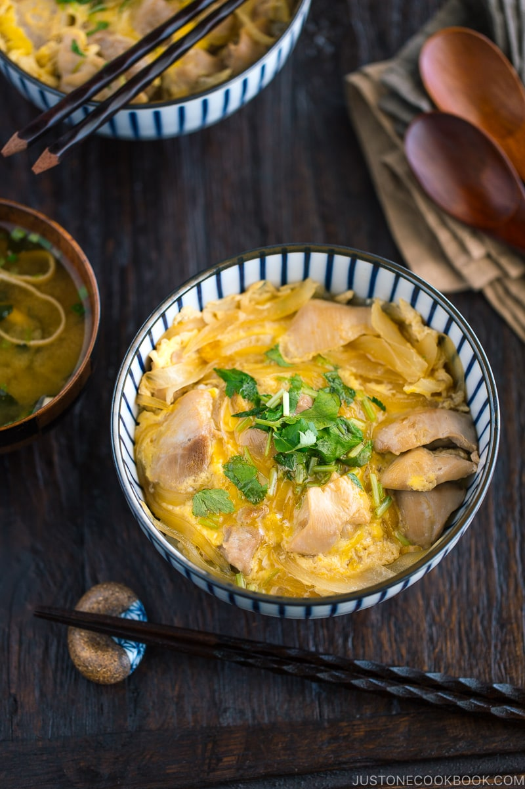

Oyakodon

Most delicious one pan meal consisting of onions, chicken and eggs simmered in an umami-rich, dashi-based sauce
Serving for 2
Ingredients
- 2 Boneless, skinless chicken thighs
- 0.5 Onion
- 2 Large eggs
For the Seasoning
- 0.5 cup dashi (Japanese soup stock
- 1.5 Tbsp mirin
- 1.5 Tbsp sake
- 1.5 tsp sugar
For the Serving
- 2 servings cookes Japanese short-grain rice
- 2 sprigs mitsuba (Japanese parsley)
- shichimi togarashi (Japanese seven spice)
Preparation
- Gather all the ingredients.
Seasoning mixture
- Combine the dashi, mirin, sake, and soy sauce in a bowl or a liquid measuring cup
- Add the sugar and mix all together until the sugar is dissolved. Depending on the size of your frying pan, you may not need all the broth. You can keep the leftovers in the refrigerator for 3 days.
Preparation Ingredients
- Thinly slice the onion and chop the mitsuba (or green onions). Beat one egg in a small bowl (you will need to beat the other egg when you work on the second batch).
- Slice the chicken thighs diagonally into pieces that are about 1½-inches (4 cm) long and ½-inch (1.3 cm) thick. I recommend using the “sogigiri” cutting technique so the chicken pieces will be of equal thickness and to create more surface area for fast cooking.
Cooking the Oyakodon
- Typically, Oyakodon is made individually for each serving, using this oyakodon pan. This small pan lets you slide the finished dish onto the rice bowl easily while the egg is set but still runny (in Japan, eggs are safe to eat raw). To demonstrate in this recipe, I use a small 8-inch (20 cm) frying pan. Divide the ingredients in half. Of course, alternatively, you can cook 2 servings together in a bigger pan.
- With the stove off, add 1 serving of the sliced onions to the pan in a single layer. Add roughly one-third to one-half of the seasonings mixture (the amount may vary depending on the size of your frying pan). Pour just enough on top to cover the onions.
- Add 1 serving of the chicken on top of the onions. Make sure the onions and chicken are evenly distributed. Then, turn on the heat to medium and bring it to a boil.
- Once boiling, lower the heat to medium low. Skim off any foam or scum that appears. Cover and cook for about 5 minutes or until the chicken is no longer pink and the onions are tender.
- Taste the broth and see if you need to adjust. Slowly drizzle the beaten egg evenly over the chicken and onions. Cook covered on medium-low heat until the egg is done to your liking. Usually, oyakodon in Japan is served while the egg is almost set but still runny.
- Add the mitsuba (or green onion) right before removing from the heat. Slide the cooked chicken and egg onto the steamed rice and drizzle the desired amount of remaining sauce on top.
Serving
- Serve the Oyakodon with shichimi togarashi on the side if you'd like.
Storing
- You can keep the leftovers in an airtight container and store in the refrigerator for up to 3 days or in the freezer for a month.
NUTRITION
Calories: 389 kcal · Carbohydrates: 36 g · Protein: 32 g · Fat: 10 g · Saturated Fat: 3 g · Polyunsaturated Fat: 2 g · Monounsaturated Fat: 4 g · Trans Fat: 1 g · Cholesterol: 293 mg · Sodium: 679 mg · Potassium: 448 mg · Fiber: 1 g · Sugar: 6 g · Vitamin A: 299 IU · Vitamin C: 3 mg · Calcium: 50 mg · Iron: 3 mg